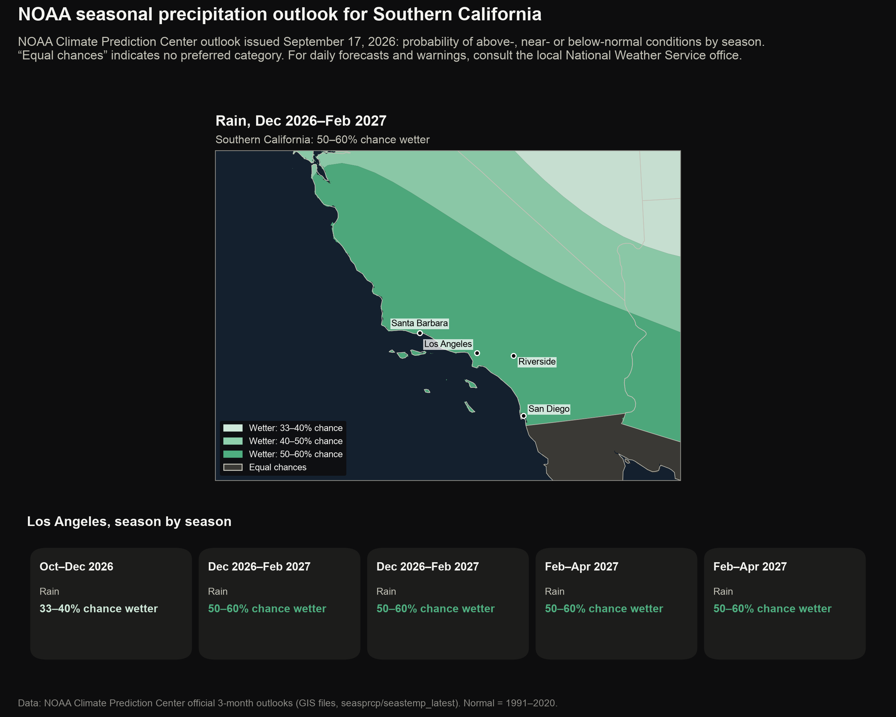
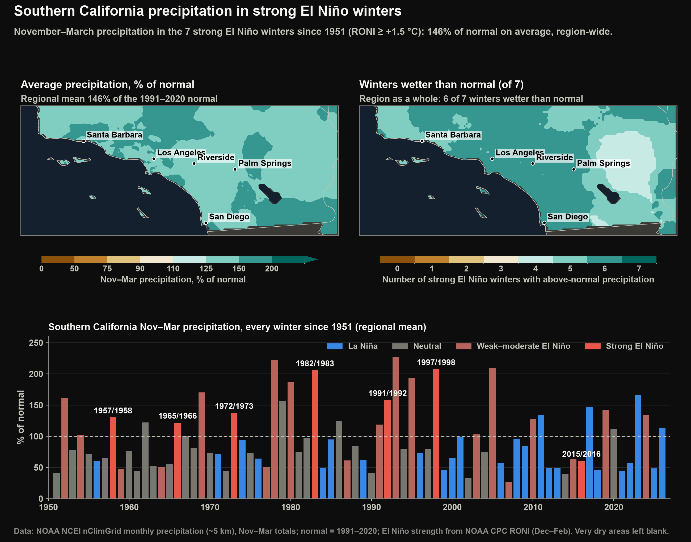

Southern California Precipitation
Southern California precipitation and El Niño
NOAA's seasonal precipitation outlook for the coming winter, and the precipitation Southern California received during past strong El Niño (A periodic warming of the central and eastern equatorial Pacific Ocean, with related changes in winds and rainfall, recurring every two to seven years.) winters, region-wide and at individual stations.
NOAA's outlook favours a wetter-than-normal winter in Southern California, most strongly from December onward.

- What it shows
- NOAA Climate Prediction Center probability of above-, near- or below-normal precipitation for Southern California, with season-by-season values for Los Angeles.
- How it relates to El Niño
- During El Niño the Pacific jet stream tends to shift south in winter, steering more storms toward Southern California; NOAA's seasonal outlook reflects this.
- Data
- NOAA Climate Prediction Center official 3-month precipitation outlooks (GIS files).
- Get the data
- Seasonal outlooks (NOAA CPC) · Outlook GIS files (NOAA CPC)
Most strong El Niño winters, though not all, have been wetter than normal across Southern California.

- What it shows
- November–March precipitation across Southern California during the strong El Niño winters since 1951 (NOAA nClimGrid (NOAA's gridded (about 5 km) monthly temperature and precipitation for the United States since 1895.), ~5 km), and the regional total for every winter.
- How it relates to El Niño
- This shows how often strong El Niño winters have actually brought more rain to Southern California, and that some, such as 2015/2016, did not.
- Data
- NOAA NCEI nClimGrid monthly precipitation (~5 km), November–March totals; El Niño strength from NOAA CPC RONI (December–February).
- Get the data
- nClimGrid monthly (NOAA NCEI) · Relative Oceanic Niño Index (NOAA CPC)
Strong El Niño seasons have usually been wet in Los Angeles and San Diego; the signal is weaker inland and farther north.
![Bar chart of every Los Angeles rainy season since 1951 as a percent of normal, coloured by El Niño or La Niña strength, and dot plots for Los Angeles, San Diego, the Inland Empire and Santa Barbara. Los Angeles: 6 of 7 strong El Niño seasons wetter than normal, median 147%; San Diego: 6 of 7 strong El Niño seasons wetter than normal, median 145%; Inland Empire: 4 of 6 strong El Niño seasons wetter than normal, median 113%; Santa Barbara: 3 of 5 strong El Niño seasons wetter than normal, median 104%.](img/03_socal_station_precip.png)
- What it shows
- Water-year precipitation by ENSO (El Niño–Southern Oscillation: the cycle of El Niño, neutral and La Niña conditions and the related swing in air pressure across the tropical Pacific.) phase at Los Angeles, San Diego, Lake Elsinore and Santa Barbara, 1951 to present.
- How it relates to El Niño
- Long station records show how rainfall at individual places has varied with El Niño and La Niña (The cool counterpart of El Niño: below-normal ocean temperatures in the central and eastern equatorial Pacific.), including how dependable the El Niño signal is in each part of the region.
- Data
- NOAA NCEI GHCN-Daily station records (water years October–September); El Niño strength from NOAA CPC RONI (December–February).
- Get the data
- GHCN-Daily stations (NOAA NCEI) · Relative Oceanic Niño Index (NOAA CPC)
Interpreting El Niño and Southern California rainfall
Strong El Niño winters have usually, but not always, brought above-normal precipitation to Southern California; the very strong 2015/2016 event was drier than normal. Heavy rain on recently burned slopes raises the risk of flooding and debris flows. Seasonal outlooks give probabilities for a whole season and are not forecasts of individual storms.
Official forecasts and warnings
- Storm, flood and flash-flood forecasts and warnings: NWS Los Angeles/Oxnard · NWS San Diego
- Seasonal outlook maps for the whole US: NOAA Climate Prediction Center